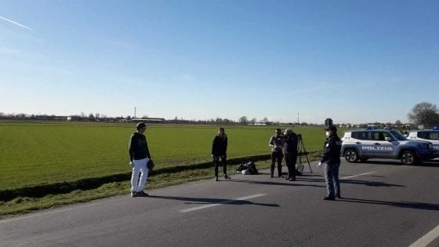
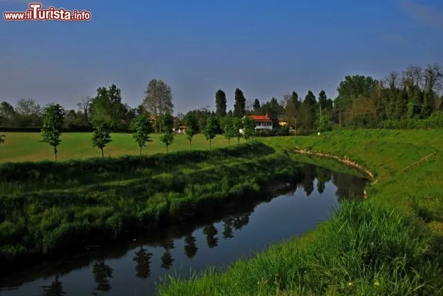
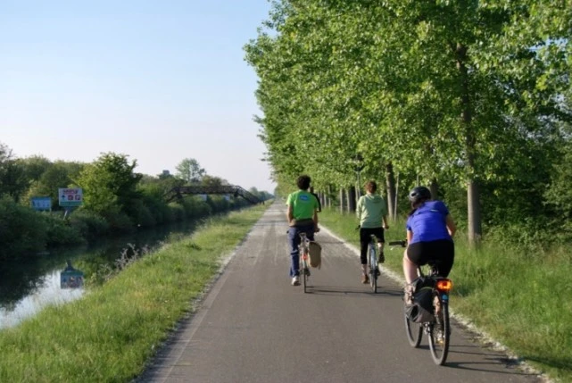

意大利怎么了（3）2020年3月3日
原文链接 备份链接 . 意大利怎么了（3）2020年3月3日 汪玮Laetitia 03-03 23:40 投诉 阅读数：16313 . 数字一直上升，心情一直跌宕起伏。 继续我的疫情记录。这是第三篇。 一，我们一家三口和两条狗狗身体 …
继续我的疫情记录。这是第五篇，意大利怎么了（5）。
想读”意大利怎么了“系列前面四篇文章的朋友，链接在这里：
（第一篇）https://www.weibo.com/ttarticle/p/show?id=2309404477824714015098#_0
（第二篇）https://www.weibo.com/ttarticle/p/show?id=2309404478138708001438#_0
（第三篇）https://www.weibo.com/ttarticle/p/show?id=2309404478537506619501#_0
（第五篇）https://www.weibo.com/ttarticle/p/show?id=2309404478907045773628#_0
1. 我们一家三口和两条狗狗的身体状态正常。
2. 今天法意边境、阿尔卑斯山里的瓦莱达奥斯塔大区也出现了两例新冠病毒阳性，直至昨天，这里还是意大利唯一一个没有病例的大区。并不意外。但我不想用“沦陷”这种词来形容。零星个案不等于沦陷。即便意大利现在疫情最严重的隆巴底大区，我也不认为是沦陷了，水的确淹到了伦巴底的腰部，但是还没有沦陷。那里的医疗系统还能支撑，虽然已经快到极限。相关增援措施也在准备当中。目前，我对意大利不想用沦陷这样的字眼，因为这对世界上真正沦陷了的人不公平。
3.意大利总确诊数已超3000了，其中包括107位死亡和276位治愈的病患。数字是一直会上升的，目前意大利和欧洲甚至中国以外的所有国家都还处在疫情上升期。高峰在什么时候到来没人知道。有一个好消息和一个不好不坏的消息，好消息是科多尼奥的1号病人M先生怀孕8个月的妻子病愈出院了。她此前虽然被认定为2号病人，但症状一直不太严重，胎儿状态也都正常。不好不坏的消息是，38岁的M先生自己目前还在重症监护当中，状况稳定，没有变好也没有变坏。他们的女儿还有不到一个月就会出生，那将是他们的第一个孩子。
4.在隆巴底的11个封锁小镇之一，一位当地的年轻室内设计师在他的疫情日记上Po出了一张图，图中是他自己伸开的一只手，紧紧贴住一棵大树。“每天我都会走路来城外的树林里，不能拥抱和触碰其他人，我就来拥抱树木。”
5.3月2日，疫情最出爆发地、11个封锁小镇之一科多尼奥通往另一个小镇赛库尼亚诺的公路上，宪兵的一辆车横在路中央，作为警戒线，两个年轻人分别站在这辆车的两侧玩起了棒球。他们都是足球运动员，分别是当地意乙和意丙球队的队员，曾是队友。现在两人分别居住的两个小镇刚好被警戒线隔开，他们约好来这里玩一把棒球。两人相隔一定的距离，两人的双手都带着手套，一只手戴着职业棒球手套，另一只手则戴普通白手套，”为了避免可能的感染“。这一切都在驻守宪兵的默许和注视下进行，围观的有三两个好友，在帮他们拍视频。”我们想用这个举动，帮助隔离区内的人们缓解一下情绪。“他们说。

6.在教育部做出全境学校停课至3月15日的决定之后，国家卫生部门也提出最新的防疫建议：65岁老人最好留在家中，尽量不外出，人与人之间打招呼，点头微笑即可，最好不要亲脸不要握手。对于喜欢社交喜欢身体接触的意大利人来说，这不会是件 容易的事。但我相信，他们当中的大部分人会尽力去做到，少数做不到的人，我也绝不会去责怪或耻笑他们。
7.从这段封锁警戒线上的棒球接力视频中，我又看到了隆巴底的平原：平整的绿色田野，纵横密布的沟渠，还有田埂边整齐的树篱。在米兰居住的7年间，我们去过这都市周围的许多小城市乃至小镇，包括此次瘟疫的中心——洛迪（科多尼奥所属的小市镇）。隆巴底虽然工业发达，但这些小镇呈现一种浓烈的乡村气息。我还记得十多年前，在隆冬的洛迪镇的中心广场上，人们在举办一个农产品市集，有个叫弗朗切斯科的老农夫带着他的小驴占据市集最中心的位置，他准备了一些胡萝卜，让好奇的孩子们喂它。”它叫皮耶罗，“他告诉我们。

洛迪镇中心广场
8.米兰南郊，离洛迪也并不算远的地方，达芬奇参与设计维护的运河Navigli，沿着它一直走，可以走到帕维亚。那运河边有一条长长的、杨树成行的自行车道，伴着牛粪和青草味骑行，再停下来摘一大把河边的野薄荷，然后观赏田地中央的拖拉机吐出一颗颗金黄的蛋——当地农夫用拖拉机收割和捆绑牧草并将它们码放在田野中央——对于好不容易来一次米兰的朋友，我会建议这样做，如果你不想只是去名店街扫货和大教堂打卡的话。因为到过这样的隆巴底，或许才能米兰这个词的含义（Milano,Miland, Mi-land）——田野中央的所在。

米兰东南郊乡村

米兰至帕维亚之间的Navigli运河
9.之前忘了说，我没有屯粮，也没有屯任何暂时用不上的货物。佛罗伦萨也没有出现抢购。我基本相信，整个防疫过程，我不需要这么做。我不知道这种确信来自哪里，是直觉吧。
10.佛罗伦萨今天的天气又变差了，只晴了昨天那么一下下。女儿不愿意在没有阳光的室外呆太久。在家里，她听厌了儿歌就会时不时来找我，要我陪她玩，我就得停下手中的事情陪她。据说很多父母都没准备好学校这次停课，尤其那些双职工家庭。意大利政府正在考虑，为双职工家庭支付保姆费用，渡过这次难关。有些地方企业已经自行这样做了。
11. 转眼间意大利疫情爆发已经快两个星期了。我的生活，其实没有太大的改变。除了女儿不再去上学，从健身房练习改为上街跑步，其他的没有变化。
12.今天的记录写得有些波澜不惊，或许因为我已经习惯了这种状态：知道可能会有的风险，在尽可能减少风险的同时与风险共存。
13.就写到这里吧。女儿在我写稿的时候打碎了一个盘子。我得去陪陪她了。
明天继续。大家也要好好的。
（汪玮，2020年3月5日于佛罗伦萨）
免责声明
本文来自腾讯新闻客户端自媒体，不代表腾讯新闻的观点和立场。
原文链接 备份链接 . 意大利怎么了（3）2020年3月3日 汪玮Laetitia 03-03 23:40 投诉 阅读数：16313 . 数字一直上升，心情一直跌宕起伏。 继续我的疫情记录。这是第三篇。 一，我们一家三口和两条狗狗身体 …
原文链接 备份链接 编者荐语： 就像是武汉封城之后，许多网友开始制作自己的视频日记，这让世界了解了武汉的人们的日常与他们面对疫情的许多情绪。四十日谈也正在创建一个平台，用影像使不同国家的人们看到在意大利的人们的状态。秋凉从封城的第0天开始 …
原文链接 备份链接 “Dio ha scelto di stare dalla nostra parte.” ********************** 在2月21日之前，意大利新冠肺炎确诊病例仅有3例。然而截至当地时间3月10日，意大 …
原文链接 备份链接 3月8日下午，意大利政府通过了新法令，对伦巴第大区以及十一个邻近省份实行封闭式管理。从当晚零点开始，米兰“封城”了。虽然具体的实施方式和疫情所处的环境比起国内有许多不同，但真实的米兰纠竟是怎样的，米兰的人们怎么面对现在 …
原文链接 备份链接 据最新数据，意大利确诊新冠病例数已超过7000，累计死亡366例，是除中国之外，全球疫情最严重的国家。 在意大利的华侨人数众多。武汉疫情起来时，他们积极捐款捐物，把当地能买到的口罩一扫而空。 意大利医疗系统对新冠 …